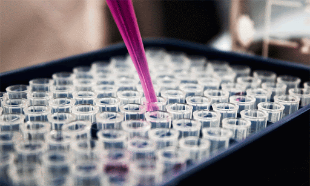
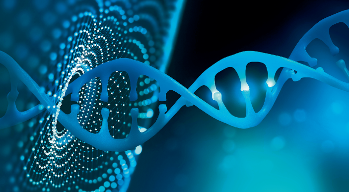
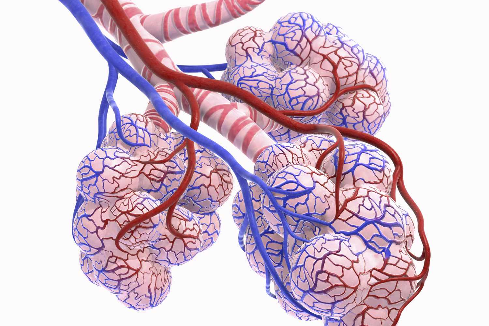
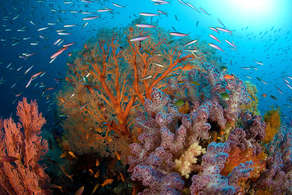
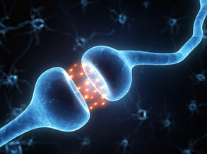
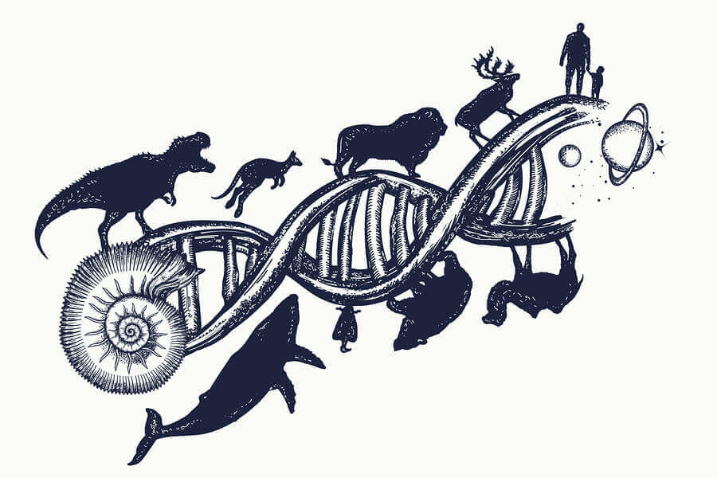

OCR A-Level Biology Revision
Module 1: Development of Practical Skills in Biology

Module 2: Foundations in Biology

Module 3: Exchange and Transport

Module 4: Biodiversity, Evolution and Disease

Module 5: Communication, Homeostasis and Energy

Module 6: Genetics, Evolution and Ecosystems
